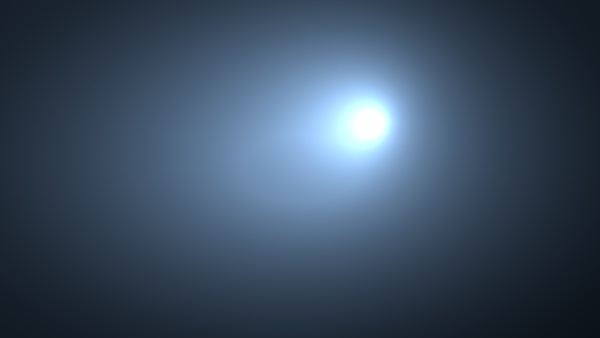

使用 Gobo 和大气体积营造超空间效果
在本教程中，我们将介绍如何使用 gobo 过滤器结合聚光灯和 atmosphere_volume 来营造超空间效果。我们还将介绍调整聚光灯以增强场景照明的各种方式。最后，我们将向摄影机添加一个 filter_map 来提供渐晕效果。
要下载对应的 Maya 场景文件，请单击此处。
您可以从 Autodesk 的 Hyperspace Madness 制作下载本系列教程的原始 Maya 场景文件。
- 首先，创建一个 spot_light。 定位并旋转聚光灯，使其指向摄影机。在 Arnold spot_light 属性下，启用 color_temperature， 并使用约为 15000 的冷蓝色值。将“曝光”(Exposure) 增加到 7 左右。
大气体积
打开渲染设置(Render Settings)，转到环境(Environment)。选择“大气”(Atmosphere)右侧的图标，创建 atmosphere_volume。
将“密度”(Density)增加至 1。您可能会注意到 atmosphere_volume 中存在一些噪波。这对于测试渲染是可以接受的，但是在最终场景渲染中，您可能需要增加 atmosphere_volume.samples 值（本例中使用的值为 15）。

密度(Density)： 1
Gobo 过滤器
- 转到 Arnold 的 spot_light 属性，然后添加一个 aiGobo 过滤器。将 filter_mode 更改为“融合”(mix)，并将“密度”(Density)增加为 1。
- 将 gobo 过滤器的 scale_s 和 t 增加为 0.5。这会缩小将在 slide_map 中使用的分形纹理。
- 将一个分形纹理贴图连接到 gobo 过滤器的 slide_map。
- 增加分形纹理的“振幅”(Amplitude) 值。这将提高分形的对比度，实现我们希望在 atmosphere_volume 中看到的光束效果。增加 frequency_ratio 将创建更精细的光束。
分形纹理 -> gobo.slide_map 过滤器
- 接下来，我们将为噪波光束添加一些变化。断开分形贴图，将一个渐变纹理投影到滑动贴图。将分形纹理连接到一个渐变颜色。将渐变“类型”(Type)更改为 uv_ramp。通过为渐变添加一些噪波进行试验。
逐灯光属性缩放
如果要调整太空船前面的镜面反射高光，我们可以调整聚光灯的曝光。但是，这也会增强体积散射效果，而这不是我们所希望的。要解决此问题，一种方法是在 Arnold 的 spot_light 属性中，调整“镜面反射”(Specular)的逐灯光缩放。然后，您可以调整灯光对镜面反射度的影响，而不影响其他对象。
这些值通常应该保留为 1，以产生在物理上精确的效果。
摄影机过滤器贴图
我们可以使用摄影机 filtermap 属性轻松为摄影机的镜头添加渐晕效果。
- 打开摄影机的 Arnold 属性，将一个渐变连接至“过滤器贴图”(Filtermap)属性。将“类型”(Type)更改为 circular_ramp，并将“插值”(Interpolation)更改为 exponential_down。

circular_ramp -> filtermap
动画
对超空间效果的外观感到满意后，您可以尝试为它添加动画效果。在下面的示例中，分形纹理的“时间”(Time) 属性已设置关键帧。分形 纹理的 place2dTexture 的 rotate_frame 属性也已设置关键帧。